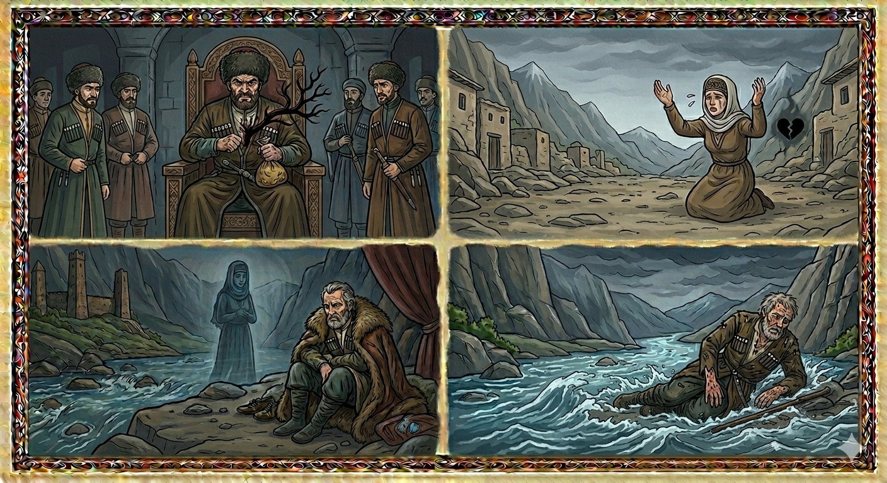

И.А. Дахкильгов. Хьехаме дувцарш - поучительные рассказы-притчи.
И.А. Дахкильгов. Хьехаме дувцарш - поучительные рассказы-притчи. Из ингушского фольклора.

Буг1ий валар
Буг1а, яхаш, ц1и а йолаш, цхьа саг хиннав хьалха. Низ болаш, къиза хиннав из. Нах те1абеш, боабеш лийннав. Нах кхухьаш, царех мах боахаш хиннав из. Селашкара цхьа сесаг йига хиннаяр цо. Шийца к1аьнк волаш хиннаяр из. Цох а цун к1аьнках а мах бала а, т1ава а, лела а саг ца хинначоа тара дар. Цу бахьанце Буг1ас урс хьеккха к1аьнк ве а вийна, из сесаг д1аяхийта хиннай. “К1аьнка урс хьекха моттиг” яхаш, наха йовзаш я из моттиг. Цу чура, кхыметтале, нитта а баккхац саго. Б1овле яхача г1алашка я из моттиг. Д1аяхийта селий сесаг, ше д1а мел йода, вий кхайкош яхай, Буг1ийна къизаг1а дола валар дийхад цо, ший къа цох дахар а дийхад, геттара текъаш. Валар каста а хала а хилар цун. Цхьа “меж” яха лазар кхийтта, бата т1ара деррига дулх 1отекхаш, т1ехк мара ца юсаш, 1азап озаш, д1адаьлар из ж1али. Бекхам боацаш х1ама дисадац.
РУССКИЙ
Как умер Буга
Некогда жил горец по имени Буга. Он был бессердечным и жестоким разбойником и убийцей. Занимался Буга тем, что похищал людей, а затем требовал за них выкуп. Как-то он пленил мать с ребенком. Видимо, они были настолько безродными, что никто за них не заступился и не предложил выкупа. Тогда Буга мальчика зарезал, а его мать отпустил. Уходя, мать всю дорогу посылала проклятия Буге. Она просила у бога самой жестокой смерти для него, просила, чтобы ее горе поразило Бугу. Судьба покарала его. Буга вскоре умер. Последние дни его прошли в жесточайших мучениях. Бугу поразила болезнь “меж” – проказа. С лица и тела у него сползала прогнившая плоть и оголялись кости. Так справедливо и жестоко бог наказал этого пса.
ENGLISH
How Buga Died
Once upon a time, there was a Highlander named Buga. He was a heartless and cruel bandit and murderer. He made a living by kidnapping people and demanding a ransom for their return. One day, he captured a mother and her child. They were apparently so destitute that no one came to their defence or offered a ransom. Buga slaughtered the boy and let his mother go. As she left, the mother cursed him all the way. She prayed that God would give him the most cruel death and that her grief would strike him down. Fate punished him. Buga soon died. His final days were spent in excruciating agony. He was struck down with the disease 'mezh' – leprosy. Rotten flesh slithered from his face and body, leaving his bones exposed. Thus, God punished this dog justly and cruelly.
НОХЧИЙН
Буг1ин валар
Буг1а, бохуш, ц1е а йолуш, цхьа стаг хилла хьалха. Ницкъ болуш, къиза хилла иза. Нах те1абеш, бойъуш лелла. Нах кхоьхьуш, царах мах бохуш хилла иза. Суьйлашкара цхьа зуда йигна хилла цо. Шеца к1ант волуш хиллера иза. Цунах а цуьнан к1антах а мах бала а, т1еван а, лела а стаг ца хиллачух тера дар. Цу бахьаница Буг1ас урс хьаькхна к1ант вен а вийна, иза зуда д1айахийтин хилла. “К1ентан урс хьаькхна меттиг” бохуш, нахана йевзаш йу иза меттиг. Цу чуьра, ур-атталла, нитташ а баккхац стага. Б1овле бохучу г1аланашкахь йу иза меттиг. Д1айахийтина суьйлийн зуда, ша д1а мел йоду, х1уй кхайкхош йахна, Буг1ийна къизах долу валар дехна цо, шен къа цунах дахар а дехна, гуттар текъаш. Валар кеста а хала а хилира цуьнан. Цхьа “меж” боху лазар кхетта, бетан т1ера дерриге дилха охьатекхаш, даь1ахк бен ца йусуш, 1азап ийзош, д1аделира и ж1аьла. Бекхам боцуш х1ума дисна дац.
ПОГОВОРКИ